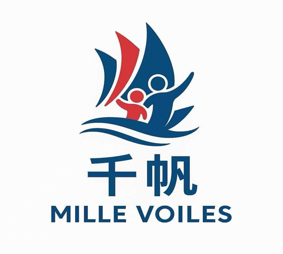

Intégration · Formation · Innovation
融入 · 培训 · 创新
Association franco-chinoise dédiée à l'intégration, la formation linguistique et l'innovation numérique. Nous accompagnons les communautés vers la réussite en France.
Découvrez notre histoire, notre mission et nos valeurs
Mille Voiles / 千帆协会 est une association loi 1901 créée à Paris en 2025. Notre mission : faciliter l'intégration des communautés chinoises en France à travers la formation civique, l'apprentissage du français et l'accès aux nouvelles technologies.
Nous proposons des cursus adaptés : préparation à l'examen civique obligatoire, cours de français intensifs, et ateliers en intelligence artificielle & programmation. Notre équipe pluridisciplinaire allie expertise pédagogique et connaissance des enjeux interculturels.
L'association s'engage à offrir un accompagnement personnalisé à chaque membre, en proposant des formations de qualité qui répondent aux exigences des institutions françaises et aux besoins spécifiques de la communauté chinoise.
Des formations conçues pour répondre aux besoins de la communauté francophone et sinophone
Préparation complète au nouvel examen obligatoire (2026) : QCM, mises en situation, cours thématiques.
Accéder au testCours de français intensifs, ateliers de conversation, préparation DELF/DALF et français sur objectifs spécifiques.
Voir les coursAteliers programmation, initiation à l'intelligence artificielle, data science et outils numériques pour tous.
DécouvrirCours de chinois mandarin pour tous niveaux : initiation, conversation, préparation aux examens HSK et chinois des affaires.
Découvrir